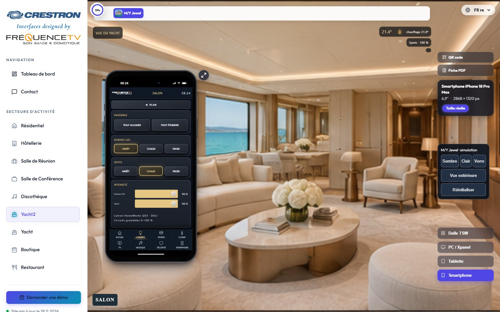
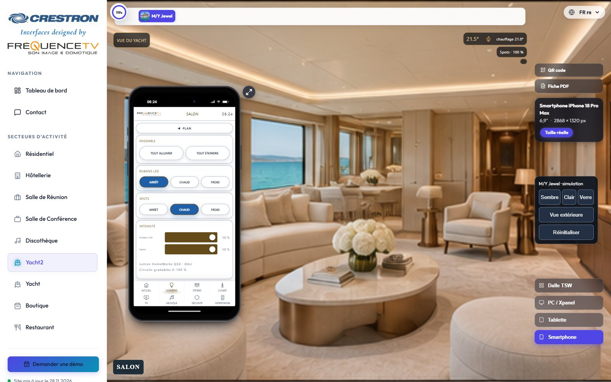
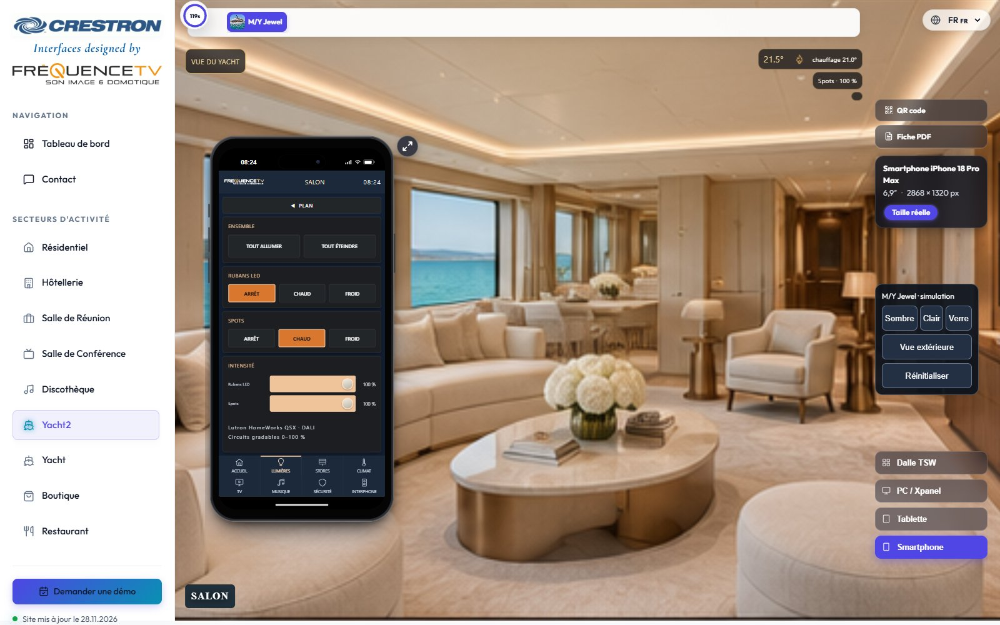
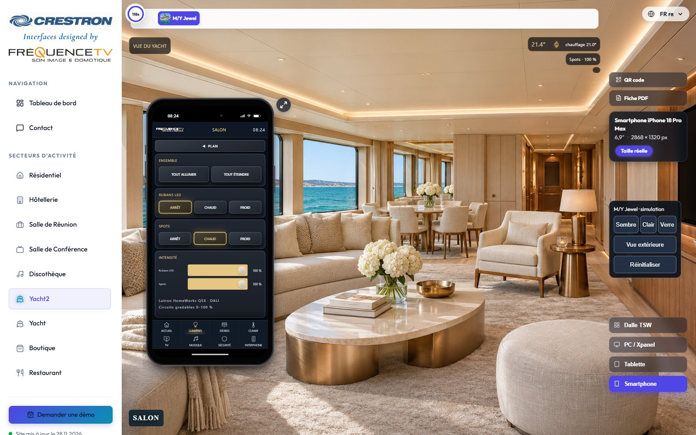
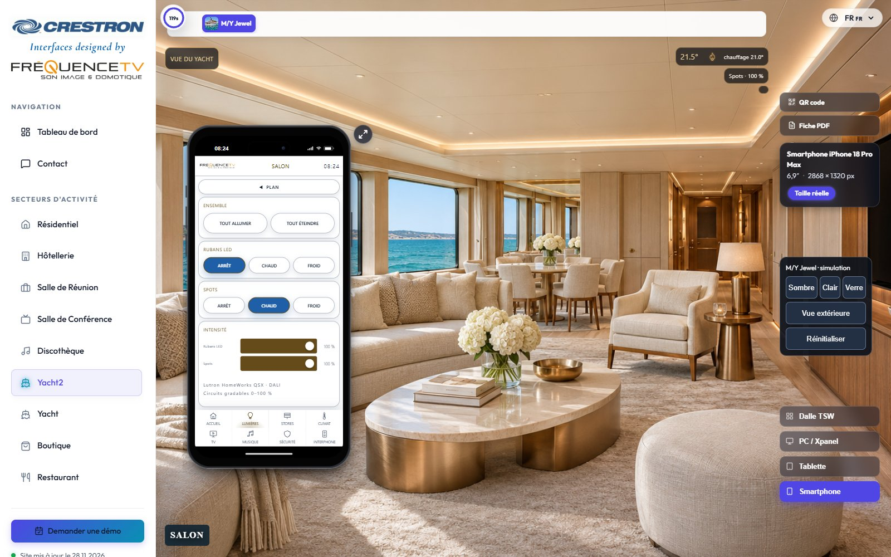
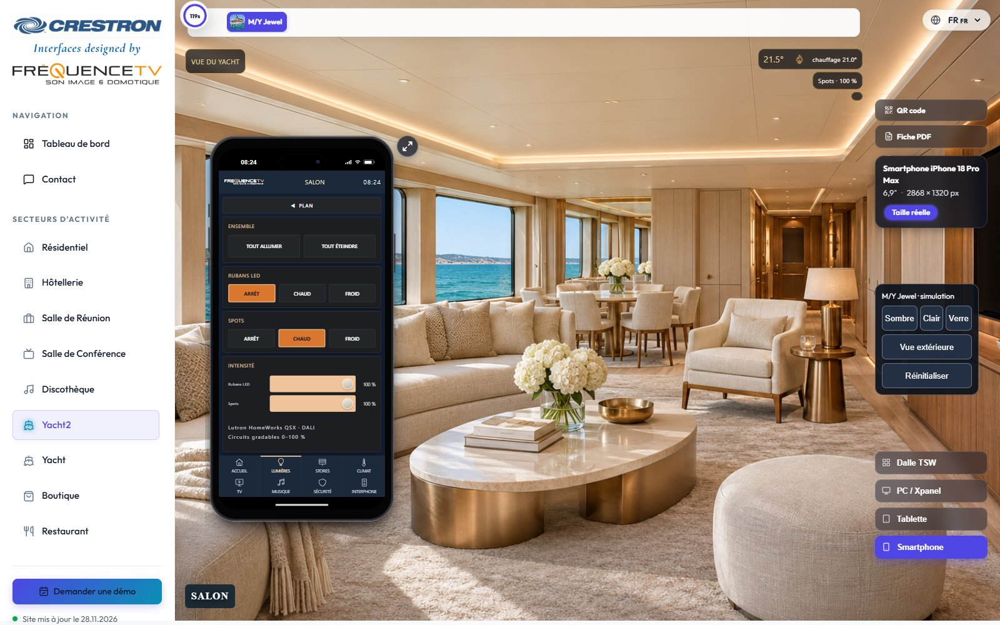

Frequence TV · M/Y Jewel Riviera
Images individuelles et mer animée · 28 novembre 2026 · GUI conservé
Avant — image issue de la planche

Sombre
Clair élégant
Verre dépoliAprès — image individuelle Riviera

Sombre
Clair élégant
Verre dépoli